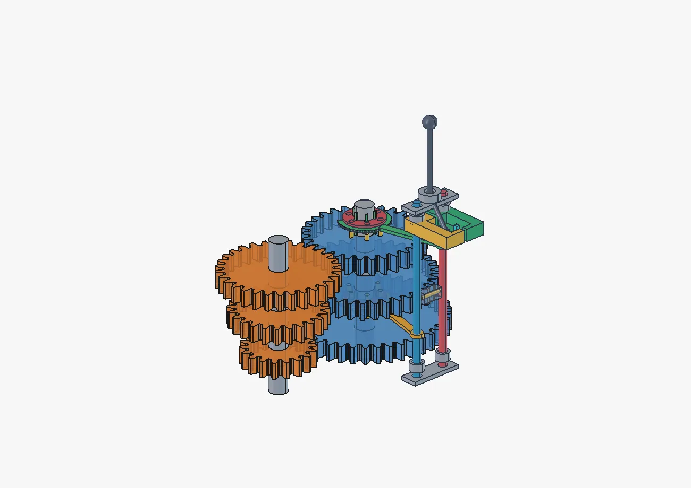

005 FREECAD / THREE.JS / INTERACTIVE

3 передачи · вращение · блокировка · 3D● LIVE 3D
MECHANISM / #05
Трёхступенчатая КПП
34 настоящие детали FreeCAD: шестерни, валы, кулачковые муфты, вилки, рычаг и блокирующий палец. Управляйте передачами N/1/2/3 и оборотами прямо в 3D.
Открыть интерактивную КПП